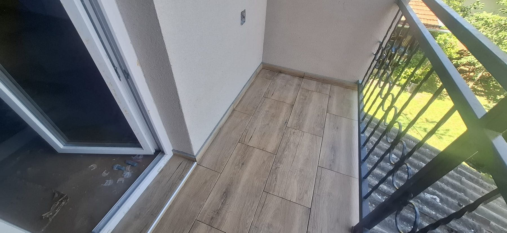
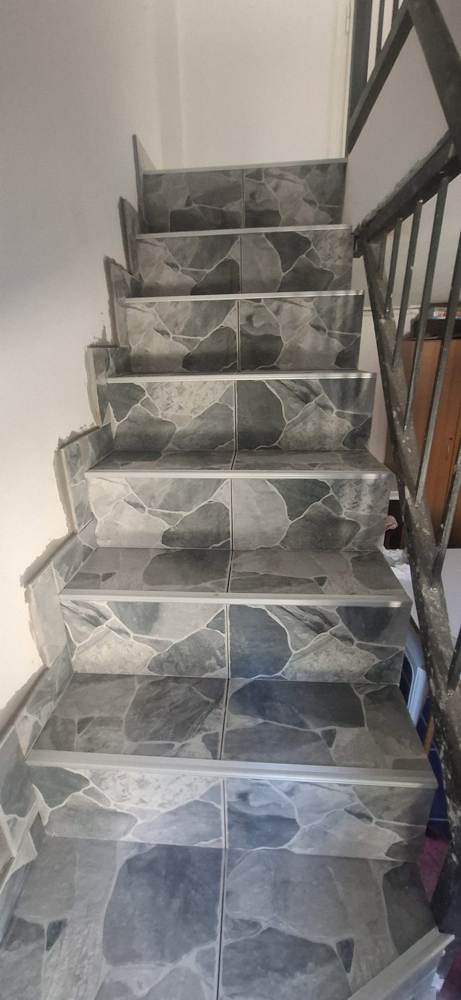
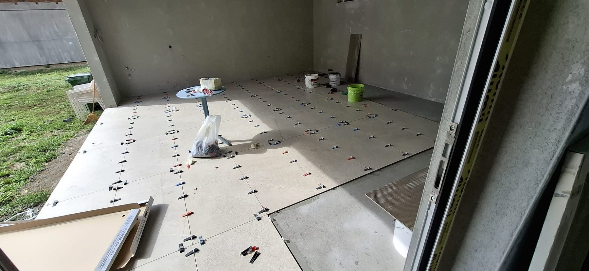
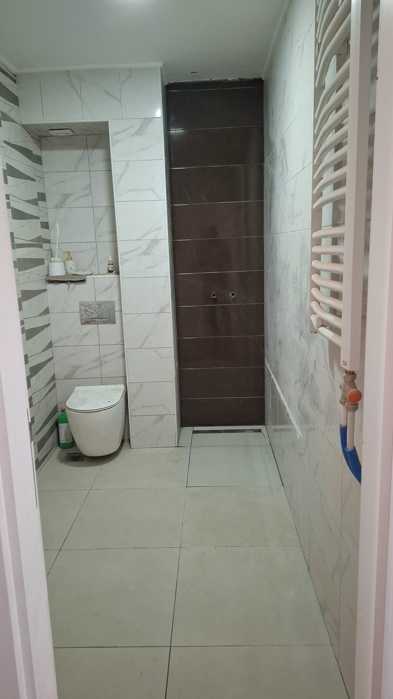

Postavljanje svih formata
Keramičke, granitne i mermerne pločice za unutrašnje i spoljašnje prostore.
O nama · Novi Sad i okolina do 50 km
NS Professional 021 izvodi radove u Novom Sadu i okolini do 50 km. Postavljanje keramičkih, granitnih i mermernih pločica za kupatila, kuhinje, terase, stepeništa i poslovne prostore. Precizno, uredno i u dogovorenom roku.
Usluge
Keramičke, granitne i mermerne pločice za unutrašnje i spoljašnje prostore.
Priprema podloge i hidroizolacija kvalitetnim materijalima.
Uredna obrada ivica, uglova, prelaza i detalja oko instalacija.
Završna obrada keramike, pregled detalja i uredno sređivanje prostora nakon radova.
Radovi
Skrolujte kroz projekte ili otvorite galeriju klikom na fotografiju.

Projekat 01

Projekat 02

Projekat 03

Projekat 04
Kontakt
Nikola · NS Professional 021 Keramika